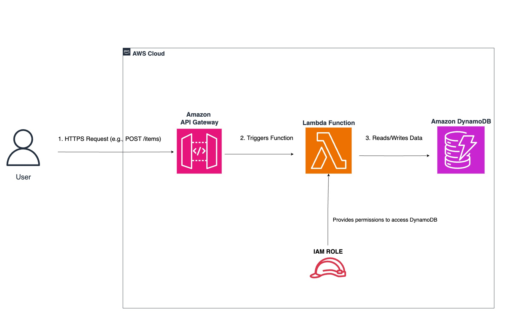

Project 4: A Serverless REST API
Building a highly scalable, cost-effective backend using Amazon API Gateway, AWS Lambda, and Amazon DynamoDB.
The Goal
The goal was to build a modern backend for a web or mobile application that requires no server management. The solution needed to be able to handle unpredictable traffic spikes, scale automatically, and be extremely cost-effective by only paying for requests as they occur.
The Architecture
I built a classic and powerful serverless pattern. The entire architecture is event-driven and fully managed by AWS.
Key components include:
- Amazon API Gateway: Provides a secure and scalable public "front door" (an HTTP endpoint) for the application.
- AWS Lambda: Acts as the serverless compute layer, running the backend logic in Node.js to process incoming requests.
- Amazon DynamoDB: A fully managed NoSQL database that provides low-latency data storage and retrieval, scaling seamlessly with the workload.
- IAM Role: Provides the Lambda function with the secure permissions needed to access the DynamoDB table.
The Test: Verifying Functionality
After deploying the API, I tested it using the `curl` command-line tool. I successfully sent a `POST` request to create a new item in the DynamoDB table and then used a `GET` request with the new item's ID to retrieve it, confirming the entire end-to-end workflow was fully functional.